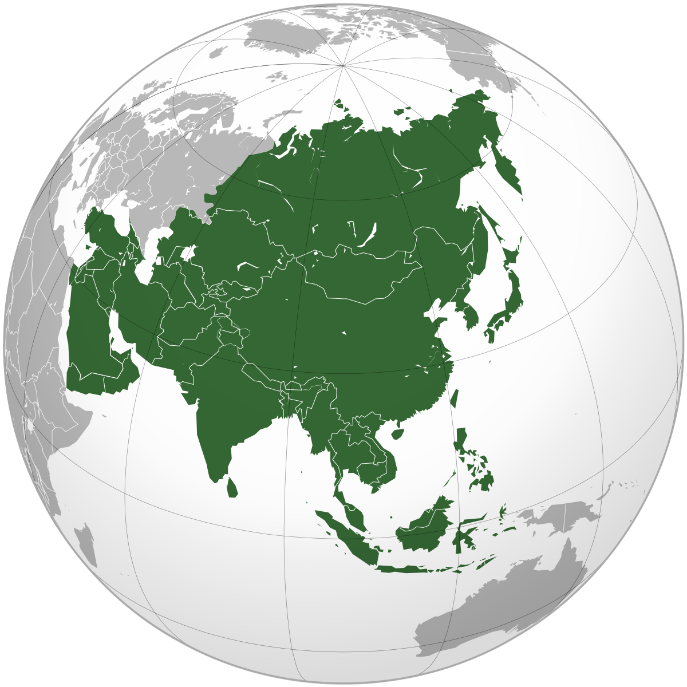

We have divided Asia in two parts for better understanding

What is Asia?
Asia is one of the world's most notable geographical regions, which is either considered a continent in its own right or a subcontinent of Eurasia, which shares the continental landmass of Afro-Eurasia with Africa. Asia covers an area of 44,579,000 square kilometres (17,212,000 sq mi), about 30% of Earth's total land area and 8.7% of Earth's total surface area. The continent, which has long been home to the majority of the human population, was the site of many of the first civilizations. Its 4.7 billion people constitute roughly 60% of the world's population